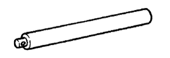

トランスファASSY（4WD） 準備品 【組み付け】
 | 09223-00010 | カバー ＆ シールリプレーサー |
 | 09316-20011 | トランスファーベアリング リプレーサー |
 | 09316-60011 | トランスミッション ＆ トランス ファーベアリングリプレーサー |
 | (09316-00011) | リプレーサーパイプ |
 | 09325-20010 | トランスミッションオイルプラグ |
 | 09326-20011 | アウトプットシャフトベアリング ロックナットレンチ |
| 09506-30012 | ディファレンシャルドライブ ピニオンリヤベアリングコーン リプレーサー | |
 | 09556-16030 | ディファレンシャル ドライブピニオン ホ-ルディングツ-ル２８ |
| 09726-40010 | ロワーアームシャフトベアリング リプレーサー | |
 | 09950-60010 | リプレーサーセット |
 | (09951-00350) | リプレーサー 35 |
| (09951-00510) | リプレーサー 51 | |
| (09951-00580) | リプレーサー 58 | |
| (09951-00600) | リプレーサー 60 | |
 | (09951-00610) | リプレーサー 61 |
 | (09951-00650) | リプレーサー 65 |
 | (09952-06010) | アダプター |
 | 09950-60020 | リプレーサーセットNo.２ |
 | (09951-00680) | リプレーサー 68 |
 | (09951-00810) | リプレーサー 81 |
 | 09950-70010 | ハンドルセット |
 | (09951-07150) | ハンドル 150 |
|  | (09951-07200) | ハンドル 200 |
| プラスチックハンマー | ||
| ノギス（0-200mm） | ||
| 温度計 | ||
 | 2046-08 | ダイヤルゲージ(10mm) (株)バンザイ扱い |
| TM-110 | ダイヤルゲージ(10mm) (株)イヤサカ扱い |
 | MB-B | マグネチックベース (株)バンザイ·(株)イヤサカ扱い |
 | QL-100N | QLトルクレンチ（100N) (株)バンザイ·(株)イヤサカ扱い |
| QL-50N | QLトルクレンチ（50N) (株)バンザイ·(株)イヤサカ扱い |
| (09612-10061) | ステアリングピニオンベアリング リプレーサ | |
 | QLE-550N | QLトルクレンチ（550N) (株)バンザイ·(株)イヤサカ扱い |
 | SF3N | F型トルクレンチ(3N·m） (株)バンザイ·(株)イヤサカ扱い |
| SF6N | F型トルクレンチ(6N·m） (株)バンザイ·(株)イヤサカ扱い |
| トヨタ純正 ＭＰグリースNo.２ | ||
| トヨタ純正 ハイポイドギヤオイル ＬＳＤ | ||
| トヨタ純正 ギヤオイルスーパー | ||
| 白ガソリン | ||
| ヒーター | ||
| 光明丹 | ||
| 木片 | ||
| ボルト (Ｍ12×Ｐ1.25首下長さ186mm） 90101-12159 | ||
| ナット（Ｍ12×Ｐ1.25） 90179-12051 | ||
| シールパッキン1281 V93500111 (株)タクティー扱い |